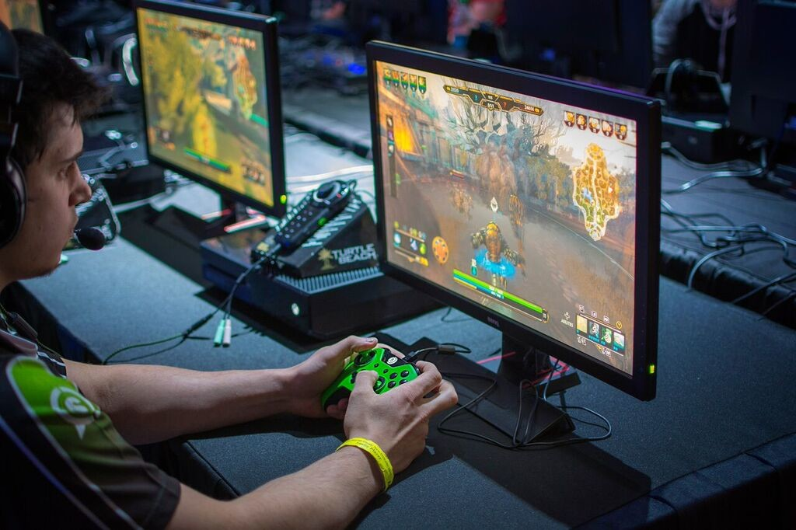

Шутеры
Командные и индивидуальные дисциплины, где важны точность, позиционирование, реакция и коммуникация.
Киберспорт объединяет соревновательные видеоигры, команды, турниры, трансляции и специализированную игровую инфраструктуру.
Командные и индивидуальные дисциплины, где важны точность, позиционирование, реакция и коммуникация.
Команды управляют героями с разными ролями и взаимодействуют для достижения общей цели.
Соревнования строятся вокруг управления автомобилем, трассы, времени и тактики обгонов.

На соревнованиях используются игровые ПК или консоли, периферия, гарнитуры, стабильная сеть и системы трансляции.